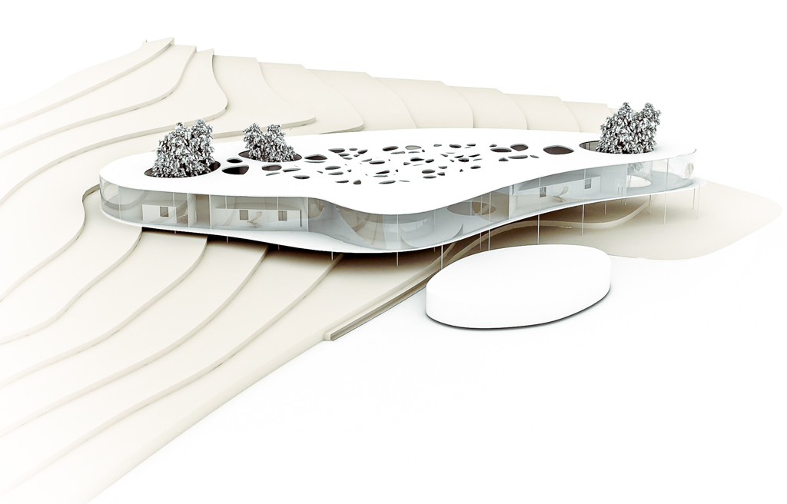
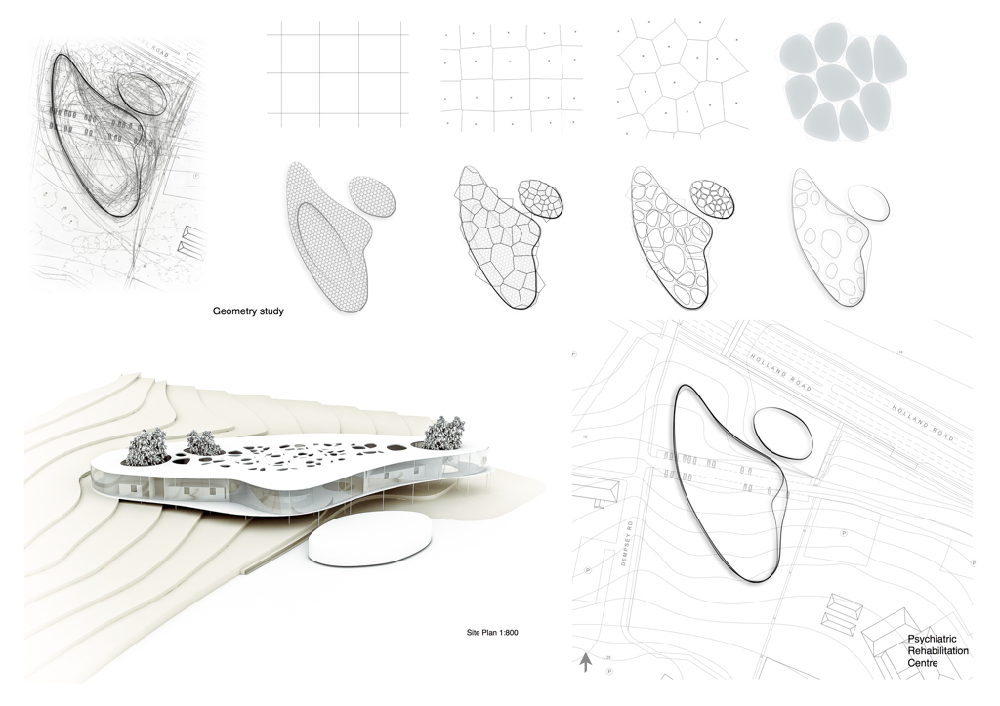
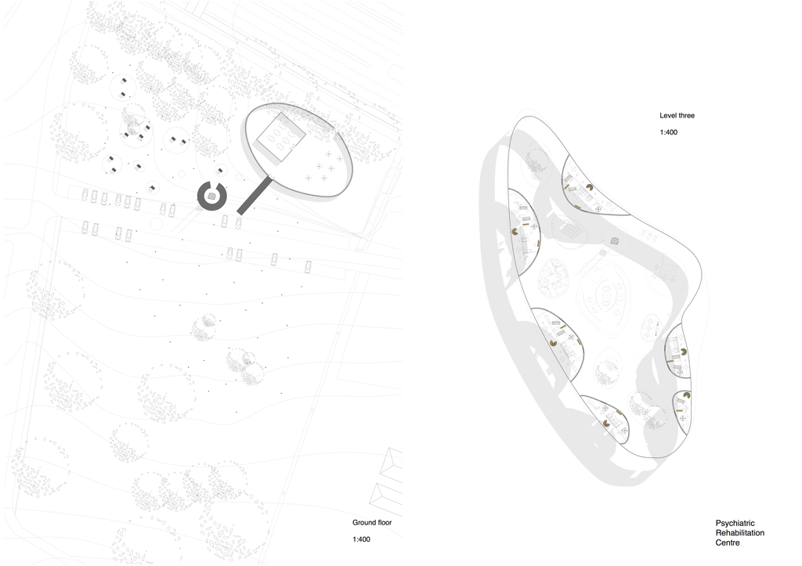
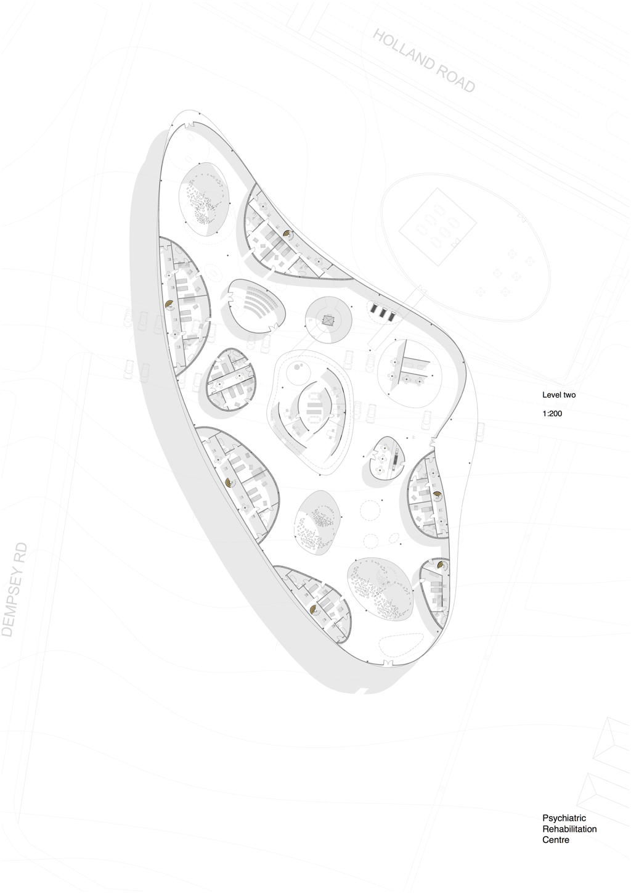
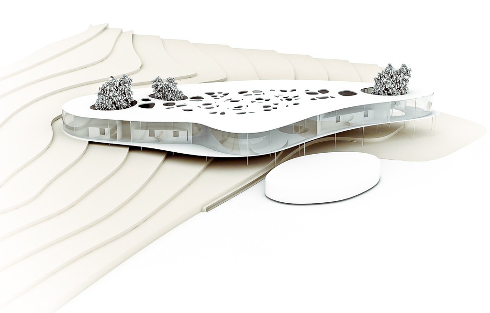
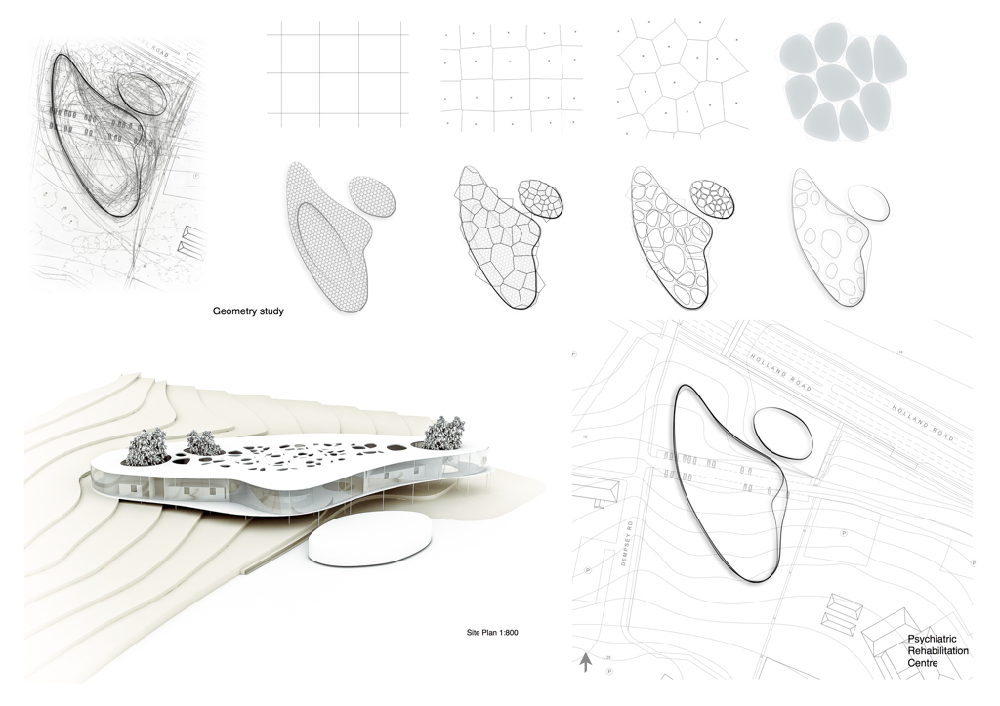
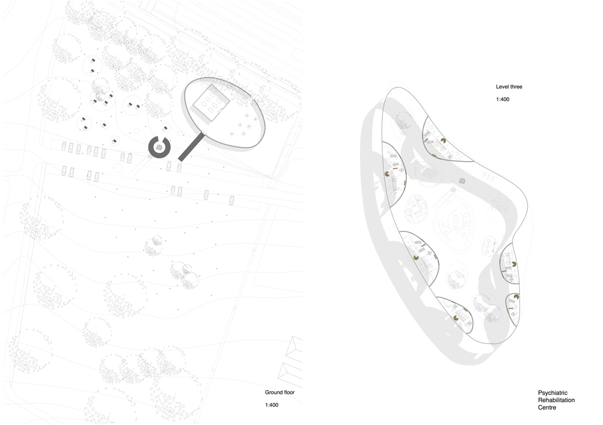
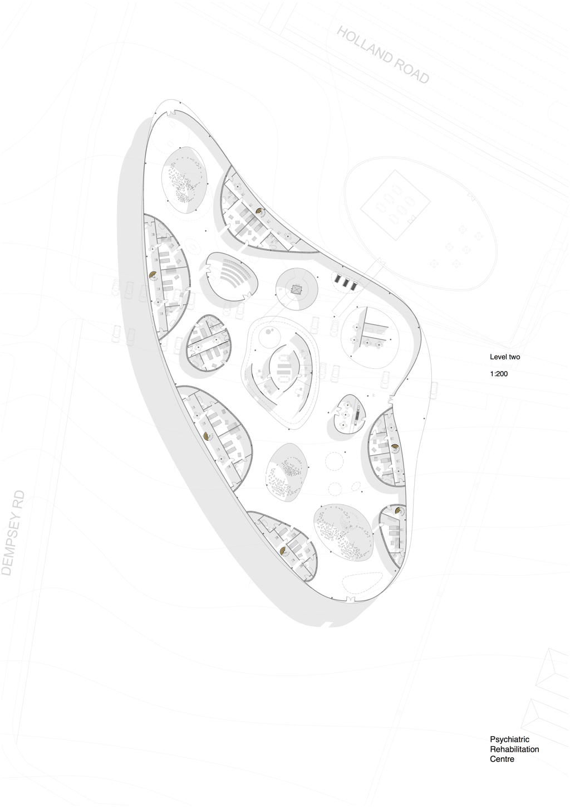

   
Building Type: Psychiatric Rehab Centre (Hospital)
Year: 2010
Status: Concept
Location: Dempsey, Singapore
Architecture | Creature
   
Building Type: Psychiatric Rehab Centre (Hospital)
Year: 2010
Status: Concept
Location: Dempsey, Singapore